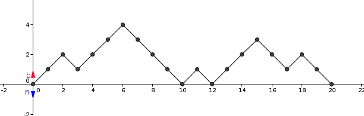
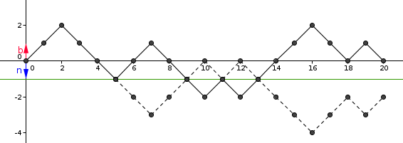

| Choisissez votre langue ! | Choose your language ! |
On dispose de deux urnes U1 et U2 et de 2n boules dont n sont blanches et n sont noires.
Au départ toutes les boules sont dans U1.
L'épreuve consiste à extraire successivement les 2n boules de U1 pour les transvaser dans U2.
Quelle est la probabilité pour que, pendant l'opération de transfert, l'urne U2 contienne toujours un nombre de boules blanches supérieur ou égal au nombre de boules noires ?
Effectuer une simulation avec un programme Python et/ou Julia.
aide
On représente une épreuve par un graphe sous forme de ligne brisée.
Le tirage d'une blanche correspond à une montée d'une unité.
Le tirage d'une noire correspond à une descente d'une unité.
Toutes les lignes doivent se finir sur la droite y=0 puisqu'il y a autant de boules blanches que de noires.
Voici un graphique correspondant à un succès (ici n=10).

Une possibilité correspond à un choix de n montées parmi 2n possibles.
Le nombre total de cas possibles est donc.
\( \displaystyle C_{2n}^{n} = \frac{(2n)!}{n!n!} \)
solution
Nous reprenons la représentation donnée dans l'aide.
Examinons le cas d'un échec.
Cela signifie qu'à partir d'un certain rang on a un point d'ordonnée -1.
Traçons en pointillés la ligne brisée symétrique de celle de l'épreuve échec par rapport à la droite y=-1.

Cette ligne aboutira au point (2n,-2).
Donc, compter les échecs revient à compter toutes les lignes partant de (0,0) pour aboutir à (2n,-2).
Ce sont des lignes correspondant à n-1 montées et n+1 descentes.
Leur nombre est donc
\( \displaystyle \frac{\left( {2n} \right)!}{\left( {n + 1} \right)!\left( {n - 1} \right)!} \)
On en déduit le nombre des succès :\( \displaystyle \frac{\left( {2n} \right)!}{n!n!} - \frac{\left( {2n} \right)!}{\left( {n + 1} \right)!\left( {n - 1} \right)!} \)
et la probabilité qui est le rapport de ce nombre sur le nombre total des possibilités.Après simplification, il vient :
\( \displaystyle P = \frac{1}{n + 1} \)
Donc avec Python :
Soit avec Julia :
We have two urns U1 and U2 and 2n balls of which n are white and n are black.
Initially all the balls are in U1.
The test consists of successively extracting the 2n balls from U1 to transfer them to U2.
What is the probability that, during the transfer operation, the urn U2 always contains a number of white balls greater than or equal to the number of black balls?
Perform a simulation with a Python and/or Julia program.
hint
A test is represented by a graph in the form of a broken line.
The drawing of a white ball corresponds to a rise of one unit.
The drawing of a black ball corresponds to a descent of one unit.
All the lines must end on the line y=0 since there are as many white balls as black ones.
Here is a graph corresponding to a success (here n=10).
A possibility corresponds to a choice of n climbs among 2n possible.
So the total number of possible cases is.
\( \displaystyle C_{2n}^{n} = \frac{(2n)!}{n!n!} \)
solution
We use the representation given in the help.
Let's look at the failure case.
This means that from a certain rank we have a point with ordinate -1.
Let's draw the broken line symmetrical to that of the failed test with respect to the line y=-1.
This line will end at the point (2n,-2).
So counting failures is like counting all the rows from (0,0) to (2n,-2).
These are lines corresponding to n-1 ascents and n+1 descents.
Their number is therefore
\( \displaystyle \frac{\left( {2n} \right)!}{\left( {n + 1} \right)!\left( {n - 1} \right)!} \)
We deduce the number of successes:\( \displaystyle \frac{\left( {2n} \right)!}{n!n!} - \frac{\left( {2n} \right)!}{\left( {n + 1} \right)! \left( {n - 1} \right)!} \)
and the probability which is the ratio of this number to the total number of possibilities.After simplification, it comes:
\( \displaystyle P = \frac{1}{n + 1} \)
So with Python:
Or with Julia:
|
Création Gilles Dubois - licence CC-BY-SA
Created by Gilles Dubois - licence CC-BY-SA
|
Septembre 2023
September 2023
|
Version mobile Jquery
Mobile Jquery version
|
|